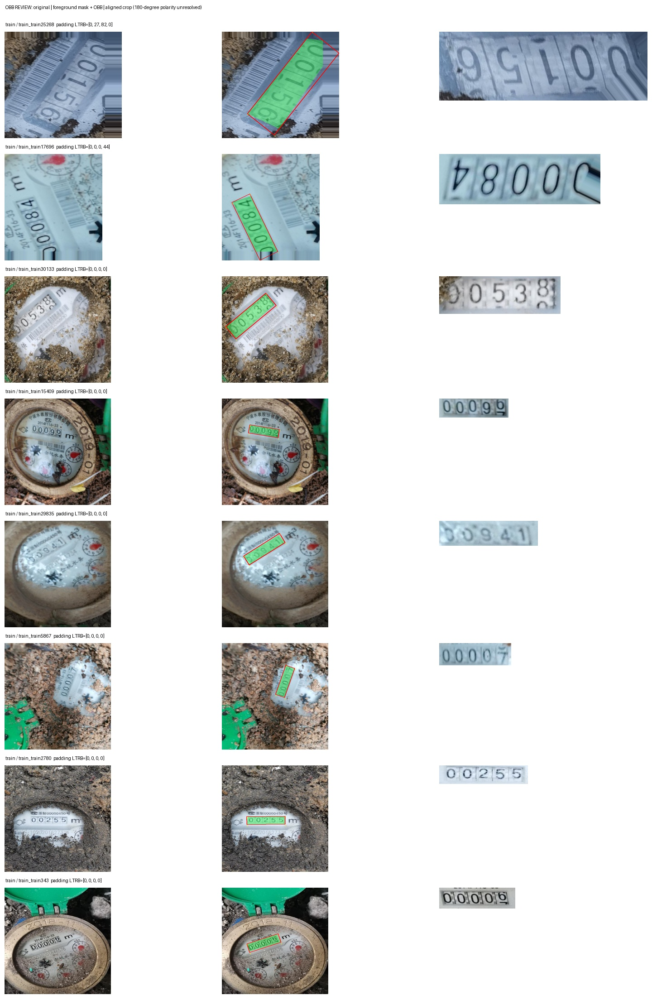
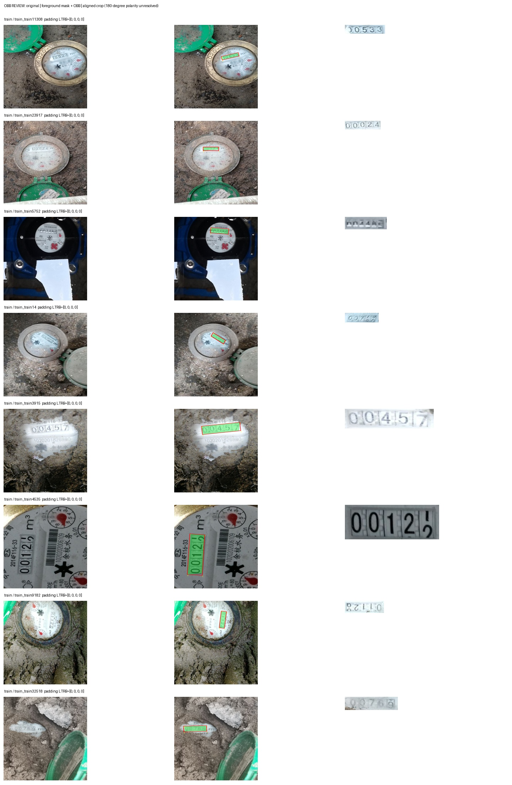
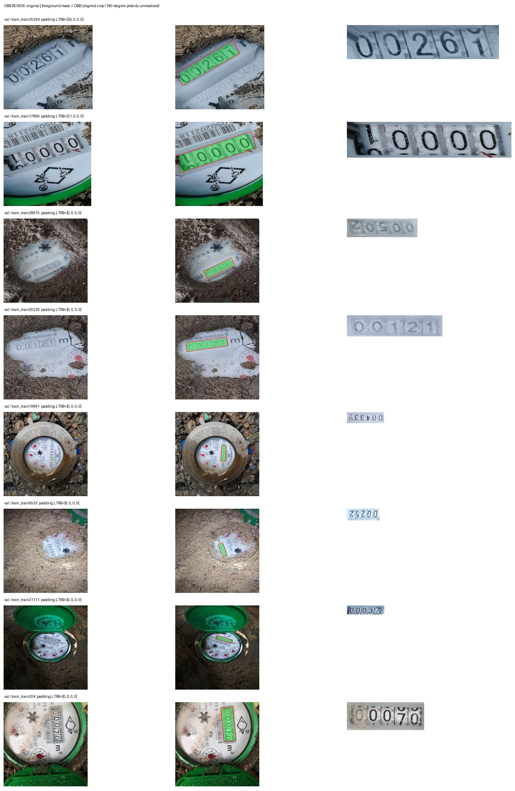
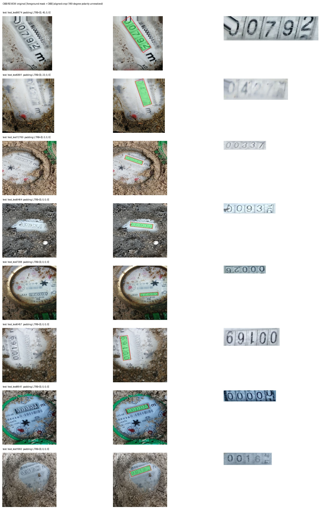

Human approval pending. No training started. 32 real examples. Left: original. Middle: mask + red OBB. Right: aligned crop.
Check all register edges. The geometric crop may be inverted by 180 degrees; source-frame truncation cannot be recovered. Click an image for its full-resolution JPEG.



